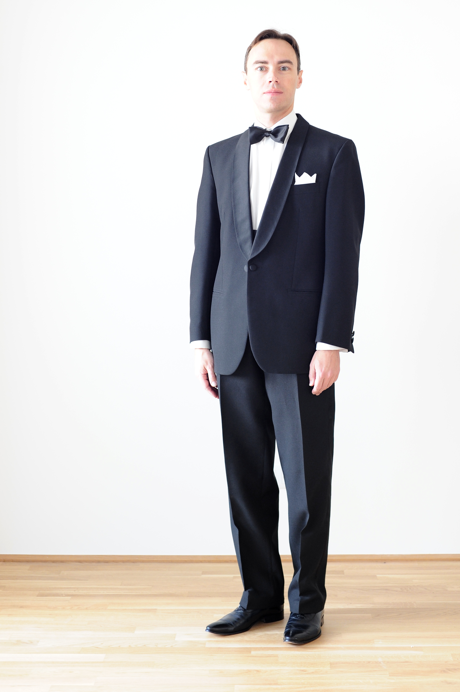

A couple weeks ago, I got one of those invitations that can quietly ruin your evening before it even starts: “cocktail-ish, but not too formal.” I stood in front of my closet doing the usual mental gymnastics—too casual, too corporate, too try-hard. The honest truth is that one great jacket fixes most of that stress. A clean blazer makes a simple outfit feel intentional, and a textured sport coat adds personality without getting loud. That “quietly put-together” lane is exactly why I keep circling back to Brooks Brothers for classic tailoring—pieces that feel grown-up, not costume-y.
Sport Coat vs. Blazer: What's the Difference?
These two often get lumped together, but the distinction matters when you're building a wardrobe. A blazer is your “I need to look sharp” switch—clean, often solid, easy to dress up with a shirt and proper shoes. A sport coat leans more relaxed, often with texture or a subtle pattern—perfect with chinos or dark denim. If you’re buying your first “do-everything” jacket, I usually recommend starting with the blazer—it’s the easiest to wear on repeat.
The best part? You don’t need a closet full of options. One or two well-chosen jackets can cover most situations if the fit is right and the fabric plays nicely with what you already own. When I’m shopping, I like starting with a brand that doesn’t make this feel like a scavenger hunt—Brooks Brothers' sport coats and blazers are built around classics that you can actually re-wear.

What Makes a Jacket Feel \"Sophisticated\"?
It’s not about being formal—it’s about feeling composed. The jackets I end up loving are the ones I forget I’m wearing: the shoulder sits naturally, the fabric drapes instead of fighting me, and the proportions feel balanced. When those details line up, you look intentional without looking like you’re trying to prove a point.
That’s why I think Brooks Brothers jackets work so well as wardrobe anchors. Their sport coats and blazers are designed to do what great tailoring should do: help you look put-together while still feeling like yourself.
How to Style Sport Coats & Blazers for Any Occasion
I’m not big on complicated outfit formulas. I like a few “defaults” that make me feel like I made an effort even when I didn’t:
- Workday “I’m prepared”: A classic blazer over a button-down (or fine knit) with tailored trousers.
- Smart casual (my favorite): A textured sport coat with chinos and loafers—comfortable, clean, quietly confident.
- Date night: Dark denim, a simple top, and a sharp blazer. It reads intentional without feeling like “office clothes.”
- Weddings & celebrations: A refined jacket with dress trousers and a polished shoe. Keep accessories minimal and let the fit do the talking.

Buying Tips: Fit First, Then Fabric
If you're investing in a jacket, prioritize fit. The shoulder should sit cleanly, the chest should feel comfortable when buttoned, and the sleeves should show a hint of shirt cuff. If any of those are off, you’ll notice it all night—even if the jacket looks great on a hanger.
Once the silhouette works, fabric becomes your versatility lever: lighter textures for warm months, richer weaves for cooler seasons, and classic colors that pair with most of your closet. Start with a versatile blazer you can wear weekly, then add a textured sport coat when you want a bit more character. With Brooks Brothers' range, you can build a small rotation that covers nearly everything on your calendar.
Final Take
If you’ve ever stared at an invite or a calendar event and thought, “I have nothing to wear,” you probably don’t need more clothes—you need one good jacket. A well-fitting blazer or sport coat gives you that quietly confident, “I’m ready for this” feeling without forcing you into a full suit. If you want a dependable place to start, Brooks Brothers' sport coats and blazers are a classic, wear-anywhere choice.